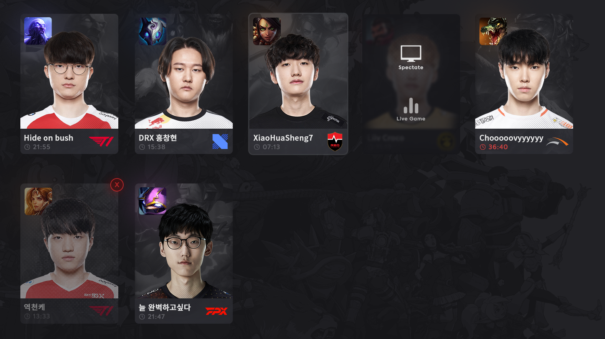
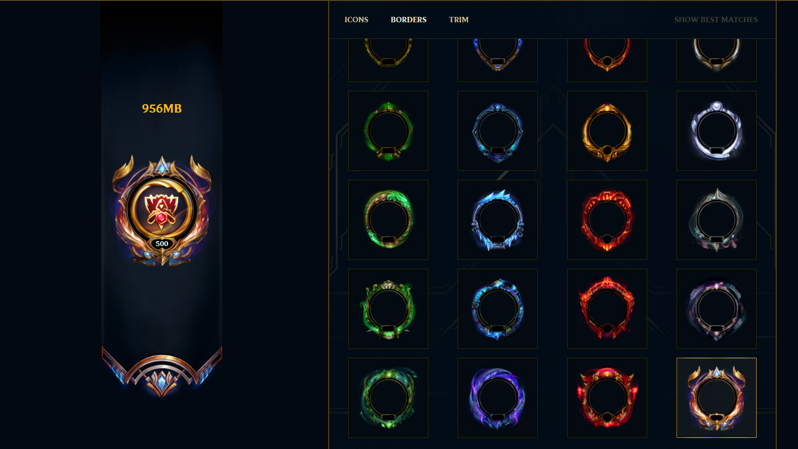
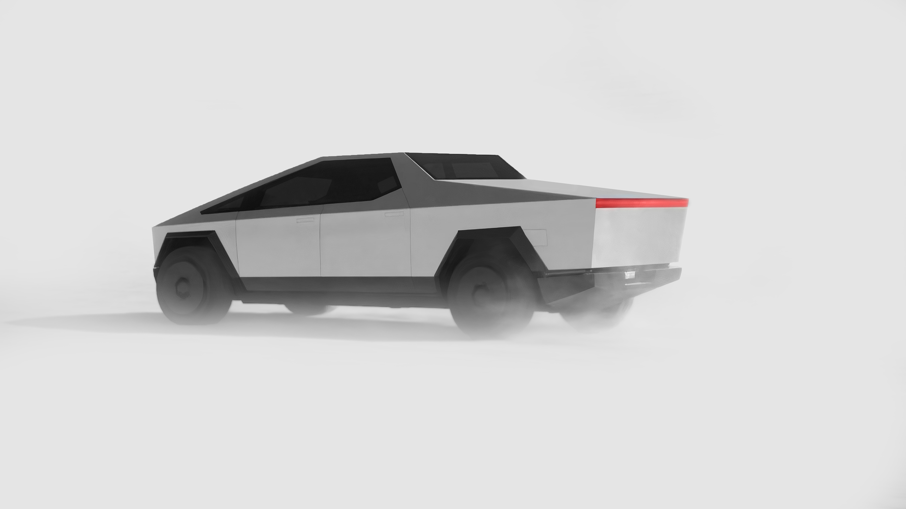

ABOUT
PROGRAMMING
DESIGN
CONCEPTS
“Intro” or “Frames”
This is a concept for a website idea I’ve had for a long time. It’s a website where any and all TV show or movie intro “frames” are collected. Sort of like if IMDB or Rotten Tomatoes was only for intros and end credits. For example, an actor or a producer can find the TV show(s) they’ve worked on and isolate the frame of an opening intro or end credits where their name appears, and do whatever they want with it. Or any other user can go and like what they think is cool.

OP.GG Client ‘Spectate Pro Matches’
This is a concept for the OP.GG ‘Pro Matches’ feature, integrated into their desktop client. I really liked the ‘Spectate Pro Players’ part of OP.GG’s website, but I thought it would be cool if you never had to leave the desktop client to load up and spectate pro games. This feature is probably implemented by this point.

LoL Icon tool
This concept was made before the overhaul to the borders and ranks. This website allows you to pair borders to icons to banners to customize your LoL profile, or see what combinations look good. All level and rank borders/banners and every icon would be available to preview.
pLan
“Logo” and “brand aesthetics” for my first programming language, pLan. Which of course doesn’t actually exist yet. It’ll be done in 20 years. I guess I really like coming up with names for programming languages and creating graphics for them more than I like learning how to actually make one.
PHOTOSHOP
P*3
All credit to Polestar for original P*3 photo.
C40
All credit to Volvo for original C40 photo.

Cybertruck
All credit to original redesign by u/DannyDanDaniels_